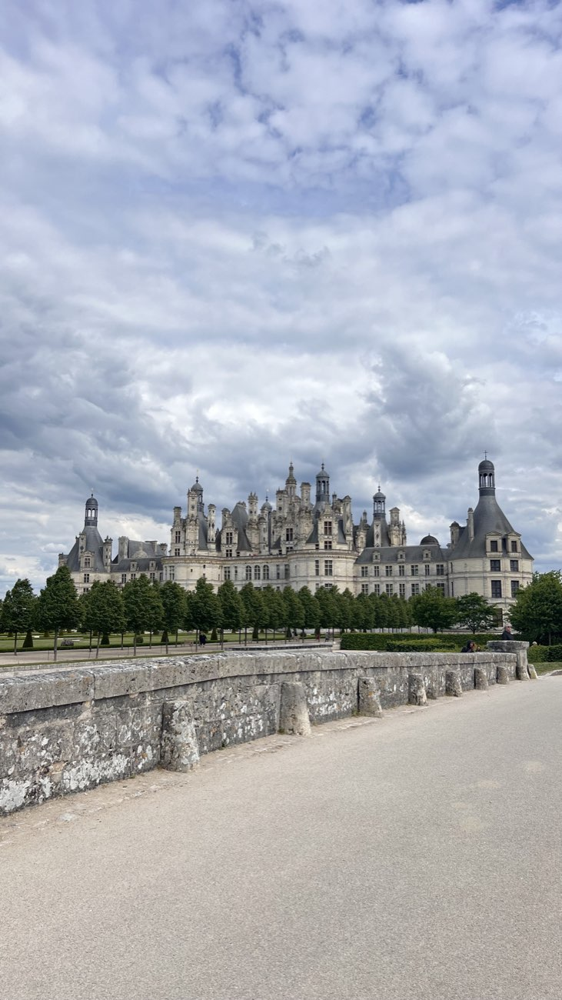

Замки и сады, городки на закат, подвалы с креманом и где остаться на ночь в замке. Нажмите номер на карте — откроется место в списке.
Самый большой замок Луары: Франциск I начал его в 1519 году. Внутри знаменитая двойная винтовая лестница — по ней можно подниматься и спускаться, не встречаясь.
«Замок дам» — галерея на арках прямо над рекой Шер. Им владели Диана де Пуатье и Екатерина Медичи.
Королевская резиденция над Луарой с лучшим видом на реку. В часовне Сент-Юбер похоронен Леонардо да Винчи.
Последний дом Леонардо да Винчи, в десяти минутах пешком от замка Амбуаз. В парке — модели его изобретений.
Четыре эпохи архитектуры вокруг одного двора и открытая винтовая лестница Франциска I.
Больше пяти веков им владеет одна семья, и она до сих пор живёт в замке. Он вдохновил Эрже на Муленсар из «Тинтина».
Ренессансный замок на острове посреди реки Эндр, весь отражается в воде.
Небольшой ренессансный замок на реке Эндр рядом с Азе-ле-Ридо. Здесь гостили Роден и Камилла Клодель, замком до сих пор владеет семья.
Тот самый «замок Спящей красавицы» с башенками. Частный — семья живёт здесь и пускает гостей.
Замок на холме над Луарой, где с апреля по ноябрь проходит Международный фестиваль садов.
Самые красивые ренессансные сады долины — и огород, разбитый как узор.
Средневековый замок в центре городка. Здесь в 1491 году Карл VIII женился на Анне Бретонской.
Королевская крепость над средневековыми улочками. Здесь Жанна д'Арк встретилась с Карлом VII.
Белый замок прямо на берегу Луары. Деревня входит в список самых красивых деревень Франции.
Деревня на слиянии Вьенны и Луары, тоже из «самых красивых деревень Франции». Закат над водой — отсюда.
Белый город на Луаре с замком над рекой. Сомюр — столица местного игристого и родина конной школы Кадр Нуар.
Здесь в 1811 году начали делать первое игристое Сомюра по шампанскому методу. Дегустации и подвалы в туфе — та самая бутылка из ролика.
Дом игристого с 1851 года и километры подвалов в известняке — экскурсия с дегустацией.
Деревня виноделов у Тура: шенен блан, игристое и погреба, вырубленные прямо в скале.
Замок-отель между Туром и Амбуазом, при нём огромная коллекция сортов томатов в саду.
Дворец над рекой Эндр, построенный парфюмером Франсуа Коти. Спа и парк.
Небольшой замок-отель на склоне у Амбуаза — удобная база для Шенонсо и Кло-Люсе.
Замок XV века на склоне над долиной Шера, в 15 минутах от Шенонсо. Номера в самом замке.
Охотничий дом XIX века в лесу между Блуа и Амбуазом, рядом Шомон.
Отель шефа Кристофа Ая на набережной Блуа, с видом на реку и замок.
Отель в стиле замка в центре Сомюра: особняк XVIII века на набережной Луары, прямо под замком.